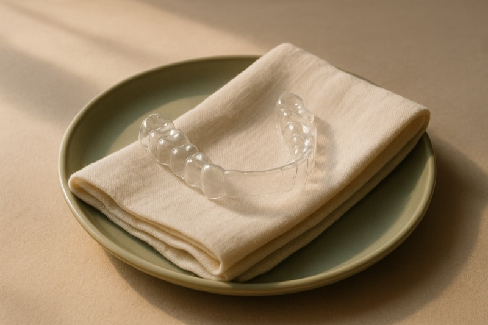
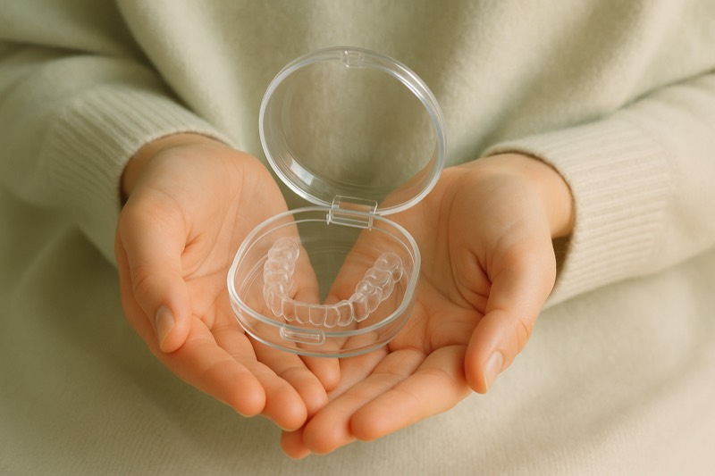
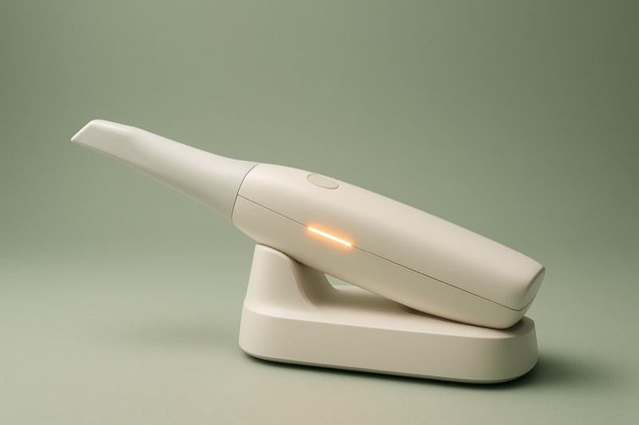
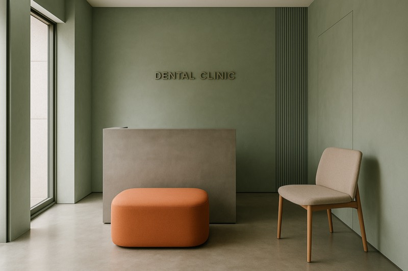
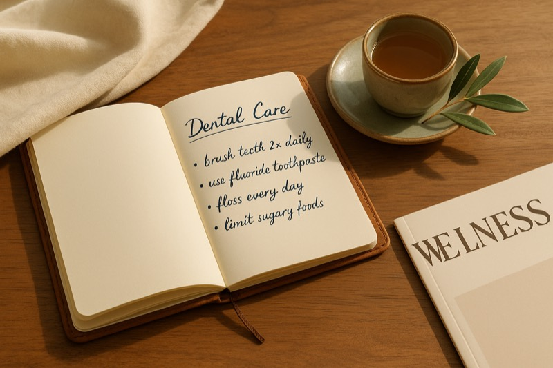

01
45s · English
Treatment
Introduction to Invisalign
What it is, who it's for, what the experience actually feels like.
Designed for expats, families, and international patients — a dental home built around how people who live between countries actually choose, trust, and stay with healthcare.
Nest is a premium, transparent, English-first dental clinic in Bangkok — built not for the medical tourist who flies in once, but for the expat, the international family, and the long-stay resident who needs a dentist they can return to for years.
Bangkok already wins on quality, hospitality, and value relative to Western markets. The opportunity isn’t to be cheaper — it’s to be the clinic that understands an international patient: clear communication, predictable pricing, help with insurance, and continuity of care. The highest-value segment is the resident, not the tourist, because residents return, refer their families, and bring their networks. And the relationships that feed them — insurers, employers, relocation agencies, international schools — are slow to build and hard for a competitor to copy, which is where long-term defensibility actually lives.
Become the default dental home for international Bangkok — then a broader healthcare-navigation brand for expats.
World-class care, hospitality culture, short waits, and strong value versus London, Sydney, or New York.
Long-term residents and families — high lifetime value, high referral rate, low churn versus one-time tourists.
Relationship density with insurers, HR teams, schools, and relocation agents compounds and resists copying.
* Population figures are directional estimates from secondary sources, not census data — used to size opportunity, not to forecast.
People living between countries carry a quiet anxiety about healthcare abroad: Will they understand me? What will it actually cost? Can I trust the plan I’m being sold? Nest answers that anxiety with three things Bangkok’s big hospitals and tourist-volume clinics rarely combine — communication, transparency, and continuity. “English-first” here is a measurable standard: native-fluency clinicians, written treatment plans in English, and billing and insurance paperwork that need no translation — not a sign on the door.
Reception, dentists, and coordination — native-level English at every touchpoint, not a translator on call.
Claim help built into the visit — not an afterthought. We make reimbursement the easiest part.
Written plans, fee transparency, photos and X-rays explained the way Singapore and Tokyo patients expect.
Calm interiors, quiet rooms, a coordinator who remembers your name — soft experience, serious care.
Soi 24, next to Sterling — walking distance from the condos, schools, and clubs where expats already are.
One trusted clinic for parents and children — the dental home expat families want and rarely find.
One roof, one record, one team — cleanings to clear aligners without the handoff to a different clinic.
Built to scale into Bangkok's medical-tourism flywheel — international standards, international audience.
The goal is not only clinical excellence — it is to become
the most trusted, most understandable dental clinic
for international Bangkok.
Low cost is what gets written about. It’s rarely what makes someone stay. International patients choose Bangkok — and stay with a clinic — for a combination Western markets struggle to match: quality, speed, hospitality, and value, in one place.
Internationally trained dentists, modern equipment, and standards that hold up against Singapore or Tokyo.
Treatment in days, not the weeks or months patients face at home — without sacrificing thoroughness.
Thailand’s service ethos turns a clinical visit into a calm, cared-for experience.
Clean, contemporary clinics with digital scanning and same-day workflows.
General, cosmetic, and orthodontic care under one roof — one record, one team, no handoffs.
Central locations on the BTS, evening and weekend slots, and easy rebooking around busy lives.
Care explained clearly, in English, end to end — the friction most expats fear, removed.
For visiting patients, treatment pairs naturally with a comfortable, low-stress recovery setting.
Home-country quality at a fraction of London, Sydney, or New York pricing — savings, not “cheap.”
Bangkok’s advantage is real. Nest’s job is to make it legible, trustworthy, and repeatable for international patients.
Nest doesn’t chase patients with ads. It builds four systems that bring the right ones to the door — each one making the next easier. Residents prove the unit economics; insurance and partnerships lower the cost of acquisition; trust infrastructure converts; content compounds it all over time.
The beachhead — not the ceiling. Residents return for years, bring their families, and refer their networks. They are the cheapest patients to reach and the most valuable to keep.
Insurance is where expat trust crystallises. Becoming a recognised, claim-friendly provider turns “how much will this cost me?” into “my plan works here” — and that answer is a referral engine.
International patients are reassured by predictability more than persuaded by advertising. Trust is built with systems — consistent evidence, knowable doctors, and pricing with nothing hidden.
Nest behaves like a media company and a trusted local authority — not just a clinic. Content is a trust-support function with hard conversion goals, built on three pillars.
Video is how trust scales before a patient ever calls. Long-form pieces — clinic tours, patient journeys, insurance explainers, dentist commentary — build authority and answer the real questions. Each one is cut into short-form clips that earn discovery, then repurposed across every channel an expat already uses. Shoot once, distribute everywhere.
Short, English-first videos answering what expat patients already search — so Nest is the answer they find, not just the clinic they stumble on.

What it is, who it's for, what the experience actually feels like.

The early-intervention pathway for children — alignment done gently and right on time.
When traditional orthodontics still wins, and what specialist treatment really involves.
Retract, protract, intrude — the precision tool that makes complex cases possible.

Ortho simulation and smile design — a 3D preview of the result, before treatment begins.

Meet the team, see the space, understand the international-standard environment.

From first visit through the long-term care rhythm — what continuity actually looks like.
How direct billing and claim help actually work — explained in plain English, end to end.
Leads arrive from everywhere — a DM, a LINE message, a Google Maps tap. The failure mode isn’t too few leads; it’s leads that fall through the cracks. Every channel flows into one CRM, one patient timeline, and one follow-up system — so no enquiry is forgotten and every patient is recalled on schedule.
Every patient’s full history and next action in a single place.
Bangkok’s leading international clinics are excellent — but they cluster at two poles: impersonal hospital scale, or tourist-and-cosmetic volume. The warm, transparent, relationship-based option built for residents is the gap.
Institutional trust, full hospital backstop, concierge international-patient services.
Impersonal scale — you’re a “case,” not a regular; bureaucratic admin; premium hospital pricing.
Fluent-English specialists, modern facilities, in-house lab, strong tourism logistics.
Volume / tourism orientation; large multi-site chain feel; less of a single-relationship “my dentist.”
Cosmetic & implant specialism, same-day restorations, long track record, many locations.
Branch-quality inconsistency; cosmetic-sales orientation can read as upsell-driven.
Excellent English, explicitly transparent pricing, clean and professional — closest in spirit to Nest.
Smaller brand footprint; not built around family or expat-community belonging.
Native-language care for specific communities (e.g. Phrom Phong Japanese, Nana Arabic corridors).
Serve one nationality; no broad English-first home for mixed-nationality international Bangkok.
Continuity of care, price transparency, no-upsell ethos, hospitality experience, insurance navigation.
The dental home — not a hospital, not a tourist factory — for people who live here.
Modern, warm, transparent, English-first dentistry for international residents in Bangkok.
Year one lives or dies on demand generation and chair utilisation, so the early KPIs are about reach, responsiveness, and conversion — not vanity reach. Each phase unlocks the next set of metrics only once the prior ones hold.
The same trust that makes Nest an expat’s dentist makes it a natural front door to the rest of their healthcare. Over time, Nest can evolve into a healthcare concierge, an expat healthcare platform, and ultimately a trusted healthcare-navigation brand — the name international residents ask first, for far more than teeth.
Each stage compounds — brand into insurance, insurance into expansion, expansion into medical tourism, and a category-defining international healthcare brand.
The first 90 days decide whether the chairs fill. The plan front-loads the systems and relationships that take longest to build, then turns on demand once the foundation can convert it.
Objective: be findable, credible, and ready to convert on day one.
Objective: a confident, well-run opening that generates first reviews.
Objective: prove the funnel converts and the brand earns reviews.
Objective: turn first patients into referrals and repeat visits.
Objective: a repeatable engine ready to scale spend with confidence.
Strategy only matters if it ships. These are the concrete assets — each tailored to a specific audience — that turn this plan into something a team can run from on Monday morning.
Fast, English-first, conversion-focused — the front door for every channel.
Investor-ready narrative of vision, market, model, and roadmap.
A clean leave-behind for schools, condos, clubs, and relocation agencies.
Credentialing-oriented document for insurer & TPA conversations.
Warm, plain-English explainer of experience, pricing, and insurance.
Welcome-packet-ready summary that fits how agents onboard new arrivals.
Three-pillar publishing plan mapped across channels and formats.
Profiles, photography, and commentary that make each clinician knowable.
Standardised, categorised, doctor-annotated case library — the trust engine.
None of these advantages is dependent on luck or hype. Each is a structural feature of how expats actually choose, trust, and stay with healthcare in Bangkok.
This is not just a dental clinic.
It is infrastructure for Bangkok's
international community.
We'd welcome a private discussion with the shareholders about how this strategy can be executed — and the partnership structure that would make us responsible for executing it.